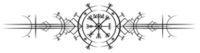

About Arcane
Arcane: League of Legends is the hit Netflix animated show which follows the story of 2 sisters, Vi and Powder, who find themselves caught up in an escalating conflict between the sister cities of Piltover and Zaun. Enter into the steampunk world of Runeterra and see their story unfold as they fight for their survival and how it shapes their future!

The World of Arcane
Arcane is set in the world of Runeterra, a rich and diverse world full of numerous sapient species spread across it's 3 continents, Valoran, Shurima, and the Camavoran continent, and it's 2 vast oceans with scattered archipelagos.
Click on the continent names to learn more about them!
The first season of Arcane takes place within Valoran and below we will explore the 3 locations that have been revealed so far.
Map of Runeterra
Season 1 Locations

Piltover
Piltover, also known as the city of progress, is the first of the sister cities to be revealed in Arcane. Piltover was the second of the 2 cities to be constructed and is built on the cliffs above Zaun. It is shown as a the main commerce hub within Valoran and is a thriving beacon of industry and invention, which accelerated in growth with the creation of hextech. Piltover is a high class society with major ruling families that dominate the industry. A family name carries a lot of weight within the city and social etiquette is held in high regard. Piltover is also the home of the council which governed both cities until Zaun became an independant city.
Click the image to learn more about Piltover!

Zaun
While Piltover built above with towering buildings and interconnecting bridges, Zaun built deep below into the caverns. It is a stark contrast to Piltover's high class society with pollution from the corroded pipes of the city above thickening the air, crime running rampant and drug barons ruling the undercity. The people of Zaun, or Zaunites, live harsh lives and the strong dominate the weak, and because of the tumultuous nature of Zaun families rise and fall regularly. The family name has all but been forgotten in Zaun leaving it's inhabitants leaving only their first name to go by. Zaun has a symbiotic relationship with it's sister city as Piltover's wealth leaks down into the city below, with many of it's incoming goods finding their way into the black markets of Zaun. From this the city prospers as a dark mirror to Piltover with it's own volatile technologies and research.
Click the image to learn more about Zaun!

Noxus
Noxus is an ever expanding empire located in the east of Valoran and is only spoken about in season 1. It is a brutal empire that is constantly moving it's borders further outward through warfare and conquest. Although Noxus has a fearsome reputation with outsiders they treat their own with respect and value the strengths and talents of each of it's citizens. Noxus is the original home of Mel Medarda who was heir to the Medarda clan, but when she was disowned by her family due to her advocation of diplomacy above violence, which did not allign with her mother's interests, she was banished to Piltover to oversee the Medarda clan's business within the city. From there Mel thrived using her political prowess to climb her way onto the council. Hopefully we will see Noxus in season 2.
Click the image to learn more about Noxus!

Characters
Arcane is filled with interesting and diverse characters, and the writers have done a great job developing a wide variety of characters within the show and not just the main cast. They have showcased well that people are not inherently just good or evil but have their own personal desires and flaws that shape them as individuals and tread the line between right and wrong to get what they want. For an animated show the artists have also done an amazing job with how the characters interact with each other and the world, making it feel real and full of emotion. Below is a list of the main characters of season 1.
Click the links to learn more about them!

Season 1 Main Characters
Click on the links below to learn about the main characters of season 1